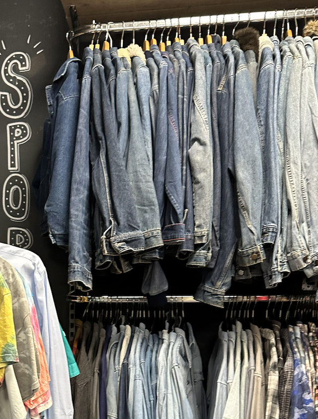

Welkom bij de Mannencollectie
Welkom op de pagina gewijd aan de vintage liefhebbers van de mannencollectie bij We Are Vintage. New Age Vintage biedt je een blik op tijdloze stukken die elke garderobe verrijken, ongeacht je stijl of smaak.
In elke we are vintage, is er in elke afdeling een rek met stukken die trending op sociale media zij. Zoals nu, is de "Full Denim" met full denim outfits trending op Tiktok. Zo is er een speciale rek daarvoor voor mensen die trendy willen zijn maar toch VINTAGE blijven!
Collectie Hoogtepunten
Van klassieke trenchcoats tot vintage band-T-shirts, ontdek de diversiteit van de mannencollectie van We Are Vintage. Elke stuk vertelt een verhaal en wacht op een nieuw hoofdstuk.
- Fan Arts
- Hand mades
- leer en bond "seasonal"
- leren schoennen "seasonal"
Stijladvies
Ontdek hoe je vintage stukken van We Are Vintage kunt combineren met je hedendaagse garderobe om een unieke en persoonlijke stijl te creëren. Hier zijn enkele tips om je op weg te helpen:
- Klassiek Ontmoet Modern: Begin met een vintage basis zoals een klassiek colbert of een retro hemd en combineer dit met moderne items zoals strakke jeans of minimalistische sneakers. Dit contrast tussen oud en nieuw creëert een opvallende, tijdloze look.
- Statement Accessoires: Gebruik vintage accessoires om een statement te maken. Een vintage horloge, een paar klassieke zonnebrillen, of een oude lederen riem kan een moderne outfit net dat beetje extra karakter geven.
- Textuur en Patronen: Experimenteer met verschillende texturen en patronen. Een vintage tweed jas of een geruit vest kan veel diepte aan je outfit toevoegen. Durf te mixen en matchen om je eigen unieke stijl samen te stellen.
- Laagjes: Vintage kleding leent zich uitstekend voor gelaagde outfits. Combineer bijvoorbeeld een retro denim jas met een basic T-shirt en een open vintage flanel voor een casual, maar interessante look.
- Denk aan de Pasvorm: Vintage kleding kan variëren in pasvorm en maat. Experimenteer met oversized items zoals jassen of truien voor een relaxte look, of kies juist voor nauwsluitende stukken voor een meer gestructureerde uitstraling.
- Persoonlijke Expressie: Het belangrijkste aspect van vintage mode is de mogelijkheid om jezelf uit te drukken. Kies stukken die spreken tot jouw persoonlijke smaak en die je zelfvertrouwen geven. Mode is tenslotte een manier om te laten zien wie je bent.
Er zijn geen strikte regels als het gaat om het dragen van vintage kleding. Het is allemaal een kwestie van experimenteren en vinden wat bij jou past. Laat je inspireren door het verleden en breng die inspiratie naar het heden met je eigen unieke draai.
Vind Jouw Stijl
Ben je klaar om de unieke vintage stukken van We Are Vintage te verkennen? Bezoek de winkel of neem contact met ons op voor meer informatie. Laat New Age Vintage je gids zijn in de fascinerende wereld van mannenmode.